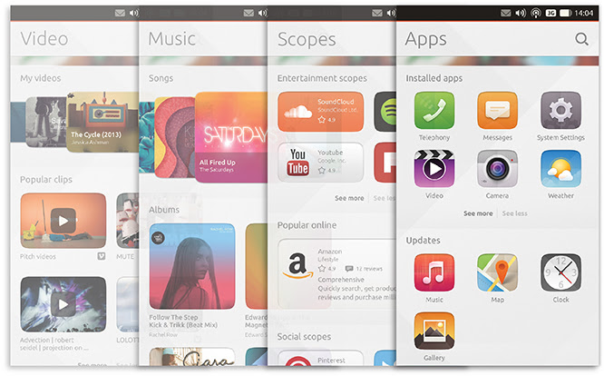
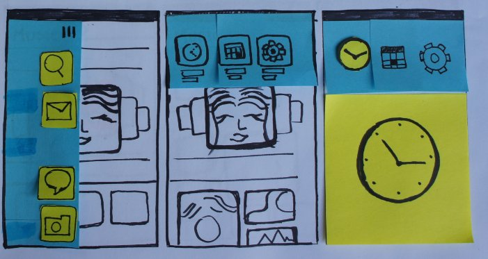
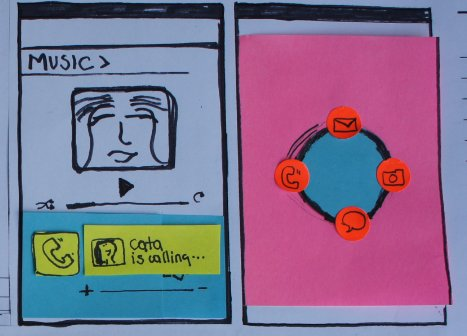
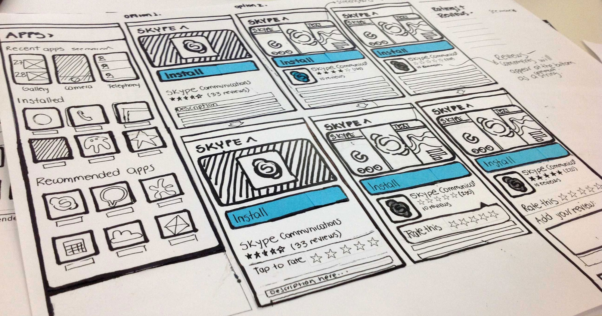
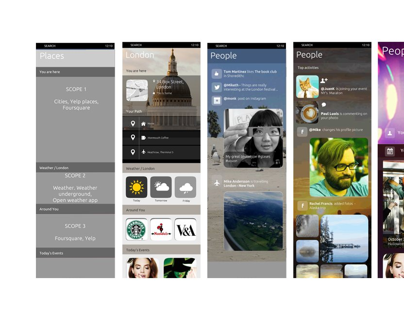
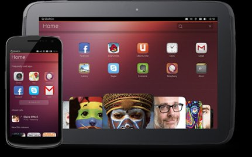

Canonical UK · London · Launched 2013
Ubuntu
Ubuntu
Touch
RoleUX Lead Designer
PlatformMobile OS — Ubuntu Phone & Tablet
FocusScopes — a new navigation & content concept
ShippedMarch 2013
In 2012, Canonical set out to build a mobile OS that didn't just copy iOS or Android. Ubuntu Touch was an ambitious attempt to rethink the smartphone experience from the ground up — not just the visual layer, but the fundamental model of how people navigate, discover, and interact with their content.
The centrepiece of that vision was Scopes — a radical new concept for content organisation and navigation. Instead of a grid of app icons, Ubuntu Touch proposed a world of contextual, swipeable content surfaces: Music, Videos, People, Apps, Places and more. Each Scope surfaced the most relevant content for that context, blending personal data and public discovery into one seamless experience.
I was part of the core team that conceived, sketched, and refined the Scopes concept — from initial whiteboard ideas and post-it prototypes through to the shipped OS across phone and tablet.
Traditional smartphone home screens present apps as isolated silos — you open an app to get to your content. Ubuntu Touch flipped this: content comes to you, organised by context. Swipe left or right to move between Scopes. Each one is a curated, live surface of the most relevant content for that moment.

Scopes v2 — Video, Music, Scopes browser, and Apps — showing the evolved content hierarchy and visual system. Tap to enlarge. ↗
User research with smartphone users revealed a consistent pattern: people wanted their content immediately, without friction. These four principles guided every design decision across the Scopes system.
The Scopes concept was built through rapid, tangible prototyping — post-it notes, marker sketches, and paper cut-outs before any pixels were touched. This low-fidelity speed allowed the team to explore many directions quickly and identify the right navigation model before committing to visual design.
Coloured post-its and marker sketches explored interaction models — including the radial action menu, the sidebar launcher, and content card layouts. Physical prototypes let the team quickly test and discard ideas before any digital tools were opened.
Each Scope — Music, People, Places, Apps — was sketched independently, then tested for system coherence. The App Scope install flow went through multiple options (2 shown side by side) before landing on the right information hierarchy.
Prototypes were tested with smartphone users to validate the swipe navigation model, content organisation within each Scope, and the balance between personal and public content. Multiple hi-fi iterations refined the visual system.

Post-it prototyping — exploring the sidebar launcher and content card layout. Tap to enlarge. ↗

Music Scope with radial action menu prototype — mail, call, camera, chat actions on a coloured overlay. Tap to enlarge. ↗
The App Scope required designing the entire app discovery and installation flow within the Scopes framework. Multiple options were sketched and tested — from full-bleed app cards to compact list views — before landing on the right balance of visual impact and information density.

App Scope — two options explored for the install flow, ratings, reviews, and screenshot layout. Notes: "Reviews/comments will appear at the bottom as a string." Tap to enlarge. ↗
The Scopes framework was designed to be extensible — new Scopes could be added as the platform matured. Future Scopes explorations included Places (location-aware content: you are here, your path, weather, nearby venues, today's events) and People (a unified social surface aggregating activity from Twitter, Instagram, Facebook, and more).
The wireframe-to-hi-fi progression shown here demonstrates the full design pipeline — from structural layout in greyscale through to the rich, full-colour experience with real content and photography.
The People Scope was particularly ambitious: rather than showing notifications from a single social network, it created a unified activity stream across all connected accounts — likes, mentions, posts, photo additions, profile changes — all in one scrollable, visual surface.
This approach anticipated the kind of cross-platform social aggregation that would become a major design challenge for OS-level experiences over the following years.

Future Scopes — Places (left: wireframe with scope structure, right: hi-fi with London, weather, nearby venues) and People (unified social activity stream). Tap to enlarge. ↗
Ubuntu Touch was designed from the start for convergence — the same OS experience adapting seamlessly between phone and tablet. The Home scope, launcher, and Scopes navigation all scaled to the larger canvas without losing the core interaction model.

Ubuntu Touch on phone and tablet — the Home Scope adapts to the larger tablet canvas while maintaining the same navigation model and visual language. Tap to enlarge. ↗
Ubuntu Touch launched globally in March 2013 — the first major OS to propose Scopes as an alternative to the app-icon home screen paradigm.
The Ubuntu Phone was announced at CES to significant industry attention — recognised as a genuinely novel approach to mobile interaction design.
The Scopes concept — content over apps, context over hierarchy — anticipated the direction mobile OS design would move in the following decade.
"A groundbreaking approach to discovering both personal and public content — providing a seamless and intuitive way to navigate various scopes, enhancing overall interaction with the device."Ubuntu Touch — Scopes Design Vision, Canonical UK, 2013
Ubuntu Touch was one of the hardest design challenges I've worked on — not because of technical complexity, but because we were asking users to unlearn a mental model they'd had for years. The app icon grid is deeply ingrained. Proposing something different requires extraordinary clarity.
The Scopes project taught me that new paradigms need to earn their complexity. Every Scope had to be immediately understandable — what is this? what can I do here? — while also being genuinely different from anything users had seen before.
Working at the OS level meant design decisions had system-wide consequences. A navigation pattern that worked beautifully in one Scope had to work across all of them — and across both phone and tablet. Consistency wasn't a nice-to-have — it was the foundation of the entire experience.